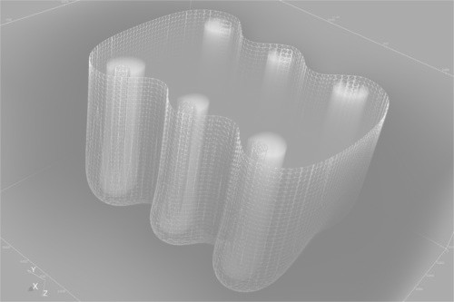
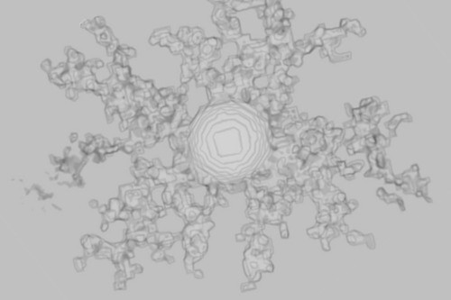

E. Lujan, Ph.D. Eng.
- Postdoctoral Associate.
- Computational Scientist. Research Software Engineer.
- Massachusetts Institute of Technology (MIT)
- eljn@mit.edu
- Numerical Models. Simulation Software. Scientific Machine Learning.
Research Projects
- Models, simulations, scientific machine learning, and Julia programming [code] Scientific machine learning is a burgeoning discipline which encompasses classical scientific computing, typically driven by differential equation models, and novel machine learning techniques. We work on accelerating the training of physics-informed neural networks, automatically discretize partial differential equations using neural networks and long-established numerical methods, and its application in different domains such as well extraction models and molecular dynamics. These contributions are implemented in Julia, a high-level, high-performance, dynamic programming language strong in numerical analysis and computational science.
- Models and simulations in 5G Narrowband-IoT [code] One of the IoT challenges is providing communication support to an increasing number of sensors. In recent years, a narrowband radio technology has emerged to address this situation: Narrowband Internet of Things (NB-IoT), which is an integral part of 5G. Despite of the efforts, massive connectivity become particularly demanding in extreme coverage scenarios such as underground or deep inside buildings sites. Here we use novel computational models and simulations to address those issues. We expect to influence future base station software design and implementation, favoring connection support under extreme environments.
- Models and simulations in Electroporation Treatments [code]  In this line of work, computational/mathematical models are used for studying electroporation (EP) based treatments applied to solid tumors, e.g. irreversible electroporation (IRE), electrochemotherapy (ECT), and gene electrotransfer (GET). We seek optimal combination of electrode geometries, field intensity, pulse length, heat distribution and conductivity to induce neoplastic cells death of primary tumor preserving most of healthy tissue. These kind of therapies present high efficacy and low side effects, they could represent an alternative to traditional methods such surgery, radiotherapy or chemotherapy.
- Models and simulations in Tumor Growth [code]  Computational oncology, which encompasses any form of computer-based modeling related to tumor biology and cancer therapy, have become target of numerous studies. In particular, mathematical models based on reaction-diffusion equations describing tumor proliferation and invasion into peripheral host tissue have proved to be of clinical relevance. In this context, we described the micro-environmental influence on micro-tumor infiltration patterns through in-silico/in-vitro experimentation. In order to simulate the core growth and peripheral tumor cell infiltration, considering a benign and a malignant stages, we implemented a reaction-diffusion based model, with spatially variable diffusion coefficient, into a three-dimensional domain. We hope to shed light in current therapy optimization strategies.
Publications
Upcoming Publications
-
Performance of D2D/NB-IoT Communications in Urban and Suburban Environments
R. Sumoza, E. Luján, E. Mocskos.
Publications in Peer-Reviewed Journals
-
OpenEP: an open-source simulator for electroporation-based tumor treatments
Scientific Reports, Nature. 2021. [code] M. Marino, E. Luján, E. Mocskos, G. Marshall. - Extreme coverage in 5G Narrowband IoT: a LUT-based strategy to optimize shared channels Internet of Things Journal, IEEE. 2019. E. Luján, J. A. Zuloaga Mellino, A. Otero, L. Rey Vega, C. Galarza, E. Mocskos.
- An integrated platform for smart energy management: the CC-SEM project Revista Facultad de Ingenieria, Universidad de Antioquia. 2019. E. Luján, A. Otero, S. Valenzuela, E. Mocskos, L. A. Steffenel and S. Nesmachnow.
- Towards an optimal dose-response relationship in Gene Electrotransfer Protocols Electrochimica Acta, Elsevier. 2019. E. Luján, M. Marino, N. Olaiz, G. Marshall.
- LibreGrowth: a tumor growth code based on reaction-diffusion equations using shared memory Computer Physics Communications Journal, Elsevier. 2019. E. Luján, M. S. Rosito, A. Soba, C. Suárez.
- Microenvironmental influence on microtumour infiltration patterns: 3d mathematical modelling supported by in vitro studies Integrative Biology, Royal Society of Chemistry. 2018. E. Luján, D. Soto, M. S. Rosito, A. Soba, L. Guerra, J. C. Calvo, G. Marshall, C. Suárez.
- Mathematical modelling of microtumour infiltration based on in vitro experiments Integrative Biology, Royal Society of Chemistry. 2016. E. Luján, L. Guerra, A. Soba, N. Visacovsky, D. Ganda, J. C. Calvo, C. Suárez.
- Optimal dose-response relationship in electrolytic ablation of tumors with a one-probe-two-electrode device Electrochimica Acta, Elsevier. 2015. E. Luján, H. Schinca, N. Olaiz, S. Urquiza, F. Molina, P. Turjanski and G. Marshall.
Publications in Peer-Reviewed Conferences
- Lite NB-IoT Simulator for Uplink Layer XVIII Workshop on Information Processing and Control, IEEE. 2019. J. A. Zuloaga Mellino, E. Luján, A. Otero, E. Mocskos, L. Rey Vega, C. Galarza.
- Cloud Computing for Smart Energy Management (CC-SEM project) Communications in Computer and Information Science, Springer. Congreso Iberoamericano de Ciudades Inteligentes (ICSC-CITIES 2018). Soria, España. 2018. E. Luján, A. Otero, S. Valenzuela, E. Mocskos, L. A. Steffenel and S. Nesmachnow.
- Modelado matemático de un patrón de invasión tumoral a través de ecuaciones de reacción-difusión y fractales DLA (Diffusion Limited Aggregation) Mecánica Computacional, Vol. XXXV, 2017, pp. 387–400. E. Luján, D. Soto, M. S. Rosito, A. Soba, L. Guerra, G. Marshall, C. Suárez.
- Electrolytic ablation dose planning methodology IFMBE Proceedings. Vol 53. Springer. 1st World Congress on Electroporation. Portorož. Slovenia. Young investigator competition finalist. 2015. E. Luján, H. Schinca, N. Olaiz, S. Urquiza, F. Molina, P. Turjanski and G. Marshall.
Abstracts and Posters
- The role of damage in reversible electroporation optimization: theory and experiments in a vegetable model 3rd World Congress on Electroporation and Pulsed Electric Fields in Biology, Medicine, and Food and Environmental Technologies. 2019 M. Marino, N. Olaiz, S. Michinski, P. Giunta, E. Luján, E. Goldberg, A. Soba, C. Suárez, G. Marshall.
- Mathematical model of glioma evolution and treatment by chemo and radiotherapy 9 Argentinian Congress of Bioinformatics and Computational Biology (9CAB2C). 2018. K. Díaz , E. Luján, A. Soba , G. Marshall , C. Suárez.
- Towards an optimal dose-response relationship in electroporation-based tumor treatments 2nd World Congress on Electroporation and Pulsed Electric Fields in Biology, Medicine and Food and Environmental Technologies. Norfolk, USA. 2017. E. Luján, M. Marino, N. Olaiz, G. Marshall.
- The concept of electroporation energy in electorporation-based models 2nd World Congress on Electroporation and Pulsed Electric Fields in Biology, Medicine and Food and Environmental Technologies. Norfolk, USA. 2017. N. Olaiz, P. Turjasnki, M. Marino, E. Luján, A. Márquez, F. Minotti, S. Zucco, M. Tellado, S. Michinski, F. Maglietti, G. Marshall.
- An MPI-based implementation of a simplified actuator line model XIX Giambiagi Winter School. UBA. 2017. M. Ventura, L. Muino, N. Olaiz, E. Luján.
- Electrolytic ablation dose planning methodology 1st World Congress on Electroporation. Portorož. Slovenia. Young investigator competition finalist. 2015. E. Luján, H. Schinca, N. Olaiz, S. Urquiza, F. Molina, P. Turjanski and G. Marshall.
- In silico generation of tumor invasion patterns VI Argentinian Conference on Bioinformatics and Computational Biology. Bahía Blanca. Argentina. Latin American Conference on Mathematical Modeling of Biological Systems. 2015. E. Luján, A. Soba, N. Visacovsky, L. Guerra, G. Marshall and C. Suárez.
- Tissue damage in vaccination protocols based on electroporation: pH fronts and tissue natural buffering The 14th International Conference on Progress in Vaccination Against Cancer (PICAC-14). Rome. Italy. 2015. M. Marino, N. Olaiz, E. Signori, F. Maglietti, C. Suárez, L. Colombo, P. Turjanski, S. Michinski, E. Luján, G. Marshall.
- Feasibility study of a portable kit for Chagas-Mazza disease diagnosis and data centralization High-Performance Computing Latin America Symposium, Buenos Aires, Argentina. 2012. E. Luján.